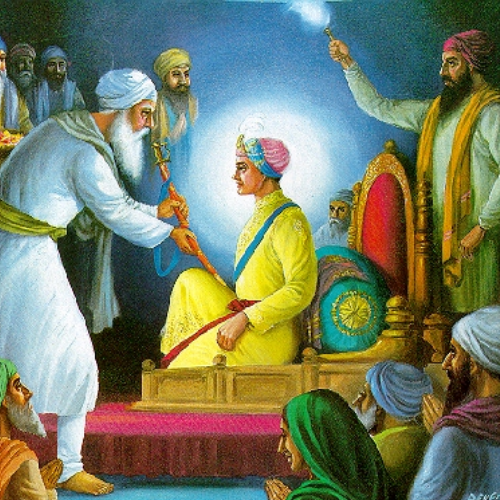

A Story of Divine Wisdom and Spiritual Victory

During his travels, Guru Nanak Dev Ji encountered a group of scholars and priests who took pride in their knowledge of scriptures. One such scholar challenged Guru Ji, saying, “Can you recite anything more divine than our sacred verses?”
Guru Ji smiled and remained peaceful. Without boasting or competing, he simply began reciting the divine bani – Japji Sahib. His words were filled with the light of truth, humility, and connection to Waheguru.
As Guru Ji recited the Mool Mantar and the verses of Japji Sahib, a peaceful energy filled the space. The scholars, who came with pride and ego, felt something change in their hearts. Their minds quieted, and their eyes filled with tears.
The challenge turned into realization. The scholar fell at Guru Ji’s feet and said, “You have shown us that divine knowledge is not for ego, but for union with the Creator.”
“Japji Sahib is not just poetry — it is divine truth that humbles even the proud.”